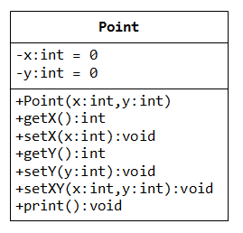
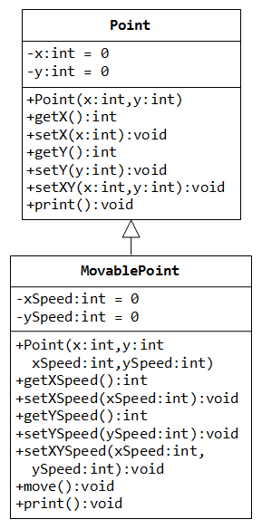
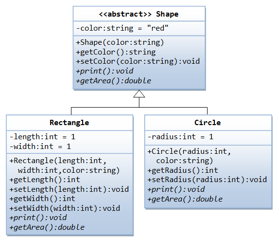

Revision on Classes and Objects
Let us revise the basics of OOP with an example of modeling 2D points with integer coordinates (x, y) in a class called Point, as shown in the class diagram.
Header File: Point.h
1 2 3 4 5 6 7 8 9 10 11 12 13 14 15 16 17 18 19 |
/* The Point class Header file (Point.h) */ #ifndef POINT_H #define POINT_H class Point { private: int x, y; // Private data members public: Point(int x = 0, int y = 0); // Constructor with default arguments int getX() const; // Getter void setX(int x); // Setter int getY() const; void setY(int y); void setXY(int x, int y); void print() const; }; #endif |
Implementation File: Point.cpp
1 2 3 4 5 6 7 8 9 10 11 12 13 14 15 16 17 18 19 20 21 22 |
/* The Point class Implementation file (Point.cpp) */ #include "Point.h" #include <iostream> using namespace std; // Constructor - The default values are specified in the declaration Point::Point(int x, int y) : x(x), y(y) { } // Getters int Point::getX() const { return x; } int Point::getY() const { return y; } // Setters void Point::setX(int x) { this->x = x; } void Point::setY(int y) { this->y = y; } // Public Functions void Point::setXY(int x, int y) { this->x = x; this->y = y; } void Point::print() const { cout << "Point @ (" << x << "," << y << ")"; } |
A Test Driver: TestPoint.cpp
1 2 3 4 5 6 7 8 9 10 11 12 13 14 15 16 17 18 19 20 21 22 23 24 25 26 27 28 29 30 31 32 33 34 35 36 37 38 39 40 41 42 43 44 45 46 47 48 49 50 51 52 53 54 55 56 57 58 59 60 61 62 63 64 65 66 67 68 69 70 71 72 |
/* A test driver program (TestPoint.cpp) */ #include "Point.h" #include <iostream> using namespace std; int main() { // Instances (Objects) Point p1; // Invoke default constructor // OR Point p1 = Point(); NOT Point p1(); Point p2(2, 2); // Invoke constructor // OR Point p2 = Point(2, 2); p1.print(); // Point @ (0,0) cout << endl; p2.print(); // Point @ (2,2) cout << endl; // Object Pointers with dynamic allocation Point * ptrP3, * ptrP4; // Declare two Point pointers ptrP3 = new Point(); // Dynamically allocate storage via new // with default constructor ptrP4 = new Point(4, 4); ptrP3->print(); // Point @ (0,0) // prtPoint1->print() is the same as (*ptrP3).print() cout << endl; ptrP4->print(); // Point @ (4,4) cout << endl; delete ptrP3; // Remove storage via delete delete ptrP4; // Object Reference (Alias) Point & p5 = p2; // Reference (alias) to an existing object p5.print(); // Point @ (2,2) cout << endl; /******************** * ARRAYS * ********************/ // Array of Objects - Static Memory Allocation Point ptsArray1[2]; // Array of Point objects // Use default constructor for all elements of the array ptsArray1[0].print(); // Point @ (0,0) cout << endl; ptsArray1[1].setXY(11, 11); (ptsArray1 + 1)->print(); // Point @ (11,11) // same as ptsArray1[1].print() cout << endl; Point ptsArray2[3] = {Point(21, 21), Point(22, 22), Point()}; // Initialize array elements via constructor ptsArray2[0].print(); // Point @ (21,21) cout << endl; (ptsArray2 + 2)->print(); // Point @ (0,0) // same as ptsArray2[2].print() cout << endl; // Array of Object Pointers - Need to allocate elements dynamically Point * ptrPtsArray3 = new Point[2]; ptrPtsArray3[0].setXY(31, 31); ptrPtsArray3->print(); // Point @ (31,31) // same as ptrPtsArray3[0].print() cout << endl; (ptrPtsArray3 + 1)->setXY(32, 32); // same as ptrPtsArray3[1].setXY(32, 32) ptrPtsArray3[1].print(); // Point @ (32,32) cout << endl; delete[] ptrPtsArray3; // Free storage // C++ does not support Array of References // Point & pts[2] = {p1, p2}; // error: declaration of 'pts' as array of references } |
Classes: A class is a abstract or user-defined data type, contrast to built-in fundamental types such as int or double . A class is represented as a three-compartment box: name, date members (or variables or attributes) and member functions (or methods, or operations). The data member and member functions are collectively called class members. The syntax of defining a class consists of two sections: class declaration and class implementation. Class declaration is further divided into two sections: private and public sections. Class implementation contains member function definitions.
// Class Declaration Section - in Header file class ClassName { private: private-data-members private-member-functions public: public-data-members public-member-functions }; // Class declaration must end with a semi-colon // Class Implementation Section - in the Implementation file member-function-definitions
Objects (or instances): An object (or instance) is a concrete realization of a class. For example, Point is a class, we can create instances (objects) p1, p2, p3, belonging to the class Point. You can invoke the constructor implicitly or explicitly as follows:
// Invoke the constructor implicitly Point p2(1, 2); Point p3; // No empty brackets for default constructor // Invoke the constructor explicitly Point p5 = Point(1, 2); Point p6 = Point(); // Need empty brackets for default constructor
There are a few ways to use a class to create instances, as shown in the above test driver program:
- Construct instances (or objects) via constructors, either implicitly or explicitly.
- Declare object pointers, and construct the objects dynamically via
newoperator. - Declare object references, and initialized to an existing object, or received as function reference argument.
- Array of objects, or Array of object pointers (dynamically allocated via
new[]operator).
Data Members: Similar to normal variables, but having so-called class scope such as private or public. The syntax of declaring a data member is the same as declaring a normal variable:
type variableName;
A data member cannot be initialized (except const static data variables) in C++03.
Member Functions: Again, similar to normal functions, but having class scope. The syntax of declaring a member function is the same as normal function:
returnType functionName(parameter-type-list);
Constant Member Functions: A const member function, identified by a const keyword at the end of the member function's header, cannot modifies any data member of this object. For example,
int getX() const;
// This function cannot modify any data member
Implementing Member Functions: Member functions are usually implemented outside class declaration. You need to use the scope resolution operator :: to identify functionName as a member of a particular ClassName.
returnType ClassName::functionName(parameter-list) {
function-body;
}
public vs. private Access Specifier: private members are accessible by the member functions of this class only. public members are accessible everywhere. For example, if p1 is an instance of Point, p1.getX() is allowed outside the class definition (such as main()) as getX() is public. However, p1.x is not allowed in main(), as x is declared private.
Constructor: A constructor is a special function having the "same name" as the classname, with no return-type. As the name implied, constructor is called each time when an instance is declared (or constructed). Constructor is used for initializing the data members of the instances created. The syntax is:
// Declare constructor inside the class declaration class ClassName { ClassName(parameter-list); // prototype only } // Constructor implementation - identified via scope resolution operator ClassName::ClassName(parameter-list) { function-body; }
Member Initializer List: used to initialize data members in the constructor. For example,
Point::Point(int x, int y) : x(x), y(y) { // The body runs after the member initializer list }
The member initializer list is placed after the function parameter list, separated by a colon. For fundamental-type data members (e.g., int, double), x(x) is the same as this->x = x. For object data members, the copy constructor will be invoked for each of the object. The function body will be executed after the member initializer list, which is empty in this case.
Alternatively, you could initialize the data members inside the constructor's body:
Point::Point(int x, int y) {
this->x = x;
this->y = y;
}
where this->x refers to the data member x; and x refer to the function parameter x.
Another alternative that avoids naming conflict, but is hard to read:
Point::Point(int x_, int y_) {
x = x_;
y = y_;
}
Default Constructor: The default constructor refers to the constructor that takes no parameter - either it has no parameter or all parameters have their default value (e.g., the above Point's constructor). If no constructor is defined in the class, the compiler inserts a default constructor that takes no argument and does nothing (i.e., ClassName::ClassName() {}). However, if you define one (or more) constructors, compiler will not insert the default constructor. You need to define your default constructor, if desired.
Function Overloading: A function (including constructor) can have many versions, differentiated by its parameter list (number, types and orders of parameters). Caller can choose to invoke a particular version by matching the parameter list.
Function Default Argument: In C++, default values can be assigned to trailing function's parameters. If the caller does not supply these arguments, compiler would insert the default value accordingly. For example,
// The Point class declaration (in header file "Point.h") class Point { ...... Point(int = 0, int = 0); } // The Point class implementation (Point.cpp) Point::Point(int x, int y) : x(x), y(y) { } // Test Driver (TestPoint.cpp) Point p1; // (0, 0) Point p2(4); // (4, 0) Point p3(5, 6); // (5, 6)
Notes:
- The default value can only be assigned to the trailing arguments.
- The default value shall be specified in the class declaration. I shall NOT be specified in the function implementation.
- Default argument is applicable to all functions, including constructor function.
Constructing Instances: As mentioned, instances (or objects) are concrete realizations of a class. A constructor would be invoked when declaring an instance to initialize the instance. The syntax to declare an instance is:
ClassName instanceName; // Invoke default constructor ClassName instanceName(constructor-parameter-list); // Invoke the constructor with matching parameter list
Public Getters and Setters for Private Variables: Member variables are usually declared private to prevent direct access (called data hiding). Instead, public getter and setter are defined to retrieve (get) and modify (set) the private member variable. The convention is as follows:
class ClassName {
private:
type xxx; // private variable
public:
type getXxx() const; // public getter
void setXxx(type); // public setter (use const type if type is a class)
}
// Getter Implementation
type ClassName::getXxx() const { return xxx; }
// Setter Implementation
void ClassName::setXxx(type x) { xxx = x; }
// OR
void ClassName::setXxx(type xxx) { this->xxx = xxx; }
Implementing Member Functions in Class Declaration: You can include the function's implementation inside the class declaration, as follows:
1 2 3 4 5 6 7 8 9 10 11 12 13 14 15 16 17 18 19 20 |
/* Point with integer coords with inline functions (PointInline.h) */ #include <iostream> using namespace std; // Class Declaration with inline implementation class Point { private: int x, y; public: Point(int x = 0, int y = 0) : x(x), y(y) { } int getX() const { return x; } int getY() const { return y; } void setX(int x) { this->x = x; } void setY(int y) { this->y = y; } void setXY(int x, int y) { this->x = x; this->y = y; } void print() const { cout << "Point @ (" << x << "," << y << ")"; } }; |
Functions that implemented inside the class declaration are automatically treated as inline functions. That is, they will be expanded in place by the compiler (if the compiler chooses to do so), instead of performing a more expensive function call.
Dot (.) Member Selection Operator: Dot operator (.) is used to access public class members, in the form of instanceName.memberName, e.g., point1.getX(), point2.print().
Arrow (->) Member Selection Operator: Arrow operator (->*pObj is a pointer to an object, instead of using (*pObj).member to select a member, it is more convenient to use the arrow notation, in the form of pObj->member.
Memberwise Assignment: The assignment operator (=) can be used to assign one object into another object (of the same class), in memberwise manner. For example,
Point p1(4, 5);
Point p2 = p1; // Also (4, 5)
(Note: The compiler automatically generates an implicit assignment operator operator=(), which performs memberwise copying.)
Passing Objects into Function: Objects are passed by value into function. A copy is created (via memberwise assignment) and passed into the function. The caller's copy cannot be modified inside the function.
Pass by reference can be archived by passing an object pointer or an object reference.
Object Pointer and Dynamic Allocation: To allocate an instance of a class dynamically, define an object pointer and use new operator to allocate the storage. The new operator return a pointer pointing to the storage allocated. You could use arrow operator -> to access the members with object pointer in the form of pObj->member (same as (*pObj).member). You need to use the delete operator to free the allocated storage.
Similarly, you can use new[] and delete[] to dynamically allocate array of objects.
1 2 3 4 5 6 7 8 9 10 11 12 13 14 15 16 17 18 19 20 21 22 23 24 25 26 27 |
/* A test driver for Dynamic Allocation (TestDynamicAllocation.cpp) */ #include "Point.h" #include <iostream> using namespace std; int main() { // Object Pointers with dynamic allocation Point * ptrP1; ptrP1 = new Point(); // Dynamically allocate storage via new // with default constructor ptrP1->print(); // Point @ (0,0) cout << endl; Point * ptrP2 = new Point(2, 2); // with constructor ptrP2->print(); // Point @ (0,0) cout << endl; delete ptrP1; // Remove storage via delete delete ptrP2; // Array of Dynamic Objects Point * ptrPtsArray = new Point[2]; ptrPtsArray[1].setXY(31, 31); ptrPtsArray[1].print(); // Point @ (31,31) cout << endl; delete[] ptrPtsArray; // Free storage for entire array } |
Object Reference: You can create an object reference to an existing object. A reference is similar to a pointer, but it is a name constant that is referenced and de-reference implicitly by the compiler.
Point p1(1, 2); // Construct an object Point & p2 = p1; // p2 is an alias to p1
Object references are useful in passing object into function by reference (by default, objects are passed into function by value).
Destructor: Similar to constructor, a destructor has the same name as the classname, but preceded with a tilde (~). The destructor is called automatically when the instance expires. It has no-argument, no return type. There can be only one destructor in a class. If there is no destructor defined, the compiler supplies a destructor that does nothing.
Destructor shall do the clean up, in particular, the dynamically allocated memory. If the constructor uses new to dynamically allocate storage, the destructor should delete them.
Inheritance
Terminology
Superclass (Base Class) & Subclass (Derived Class): In OOP, we could organize classes in hierarchy to avoid redundancy. We can extend a subclass (or derived class) from a superclass (or base class). The subclass inherits the members of the superclass, known as inheritance.
The syntax for deriving a subclass from a superclass is as follows:
class SubclassName : inheritance-access-specifier SuperclassName {
......
};
The subclass inherits all the members of the superclass. The subclass shall define its own constructor(s). It may define additional members (data or functions).
Access Specifier: C++ supports three access specifier: private, public and protected. A private member is accessible within the class by member functions and by friends of that class. A public member is accessible by all. A protected member can be accessed by itself and its friend, as well as its subclasses and their friends.
To access a superclass's member explicitly, you could use the scope resolution operator in the form of superclassName::memberName.
Inheritance Access Specifier: It specifies the type of inheritance: public, private or protected. The most commonly used is public-inheritance. In this case, the inherited members in the subclass have the same visibility as the superclass. There is no further restriction. In other words, public members in the superclass becomes public members in the derived class; protected members in the base class become protected member in the derived class. In this case, every subclass object is also a superclass object (known as is-a relationship), and can be substituted for a superclass reference.
private- and protected-inheritance, which are rarely used, may further restrict the access of the inherited members (equal or lower than the access in superclass). In protected-inheritance, public and protected members in the base class become protected members in the derived class. In private-inheritance, public and protected members in the base class become private member in the derived class. Take note the private members in the superclass cannot be directly accessed in the subclass; while protected members can be directly accessed.
Example: Superclass Point and subclass MovablePoint

[TODO] Description
Superclass Point.h, Point.cpp
No change.
Subclass Header: MovablePoint.h
1 2 3 4 5 6 7 8 9 10 11 12 13 14 15 16 17 18 19 20 21 |
/* Header for Moving 3D Points with int coords (MovablePoint.h) */ #ifndef MOVING_POINT_H #define MOVING_POINT_H #include "Point.h" // Include header of the base class class MovablePoint : public Point { // MovablePoint is a subclass of Point private: int xSpeed, ySpeed; public: MovablePoint(int x, int y, int xSpeed = 0, int ySpeed = 0); int getXSpeed() const; int getYSpeed() const; void setXSpeed(int xSpeed); void setYSpeed(int ySpeed); void move(); void print() const; }; #endif |
Subclass Implementation: MovablePoint.cpp
1 2 3 4 5 6 7 8 9 10 11 12 13 14 15 16 17 18 19 20 21 22 23 24 25 26 27 28 29 |
/* Implementation for Moving 3D Points with int coords (MovablePoint.cpp) */ #include <iostream> #include "MovablePoint.h" // Include header containing the class declaration using namespace std; MovablePoint::MovablePoint(int x, int y, int xSpeed, int ySpeed) : Point(x, y), xSpeed(xSpeed), ySpeed(ySpeed) { } // Getters int MovablePoint::getXSpeed() const { return xSpeed; } int MovablePoint::getYSpeed() const { return ySpeed; } // Setters void MovablePoint::setXSpeed(int xs) { xSpeed = xs; } void MovablePoint::setYSpeed(int ys) { ySpeed = ys; } // Functions void MovablePoint::print() const { cout << "Movable"; Point::print(); // Invoke base class function via scope resolution operator cout << " Speed=" << "(" << xSpeed << "," << ySpeed << ")"; } void MovablePoint::move() { // Subclass cannot access private member of the superclass directly // Need to go thru the public interface Point::setX(Point::getX() + xSpeed); Point::setY(Point::getY() + ySpeed); } |
Notes:
- When the subclass construct its instance, it must first construct a superclass object, which it inherited.
- The subclass does not have direct access to superclass'
privatemembersx, andy. To initialize these inherited members, the subclass constructor invokes the superclass constructor, which ispublic, in the member initializer list. - You need to use the member initializer list (
: Point(x, y)) to invoke the superclassPoint's constructor to initialize the superclass, before initializing the subclass. Object data member can only be initialized via member initializer list. - If you did not explicitly invoke the superclass' constructor, the compile implicitly invoke the superclass' default constructor to construct a superclass object.
- To use the superclass members, use scope resolution operator in the form of
SuperclassName::memberName. For example,Point::print(),Point::getX().
A Test Driver: TestMovablePoint.cpp
1 2 3 4 5 6 7 8 9 10 11 12 13 14 15 16 17 18 19 20 21 22 23 24 25 |
/* Test Driver Program for MovablePoint (TestMovablePoint.cpp) */ #include <iostream> #include "MovablePoint.h" // included "Point.h" using namespace std; int main() { Point p1(4, 5); // superclass p1.print(); // Point @ (4,5) cout << endl; MovablePoint mp1(11, 22); // subclass, default speed mp1.print(); // MovablePoint @ (11,22) Speed=(0,0) cout << endl; mp1.setXSpeed(8); mp1.move(); mp1.print(); // MovablePoint @ (19,22) Speed=(8,0) cout << endl; MovablePoint mp2(11, 22, 33, 44); mp2.print(); // MovablePoint @ (11,22) Speed=(33,44) cout << endl; mp2.move(); mp2.print(); // MovablePoint @ (44,66) Speed=(33,44) cout << endl; } |
To compile/link (aka build) the program:
// Compile Point.cpp (with Point.h) into object code Point.o // -c option specifies compile-only > g++ -c Point.cpp // Compile MovablePoint.cpp (with MovablePoint.h) into object code MovablePoint.o // Does not require Point.o for compilation (but needed in linkage) > g++ -c MovablePoint.cpp // Compile and link TestMovablePoint.cpp with object files into executable file > g++ -o TestMovablePoint.exe TestMovablePoint.cpp MovablePoint.o Point.o
Example: Point and MovablePoint with protected Data Members
Recall that a private data member in the superclass is not accessible in the subclass. For example, in the function move() of MovablePoint, you cannot reference x of superclass Point directly.
void MovablePoint::move() {
x += xSpeed; // error: 'int Point::x' is private
// Point::setX(Point::getX() + xSpeed);
Point::setY(Point::getY() + ySpeed);
}
However, if we make x protected instead of private, the subclass can access x directly.
// Superclass Point class Point { protected: int x, y; ...... }; // Subclass MovablePoint class MovablePoint : public Point { ...... } void MovablePoint::move() { x += xSpeed; y += ySpeed; }
[TODO] more examples
Polymorphism
Polymorphism works on object pointers and references using so-called dynamic binding at run-time. It does not work on regular objects, which uses static binding during the compile-time.
We typically allocate object dynamically via the new operator and manipulate the return pointer in polymorphism. Recall that we can dynamically allocate objects for the Point and MovablePoint classes as follows:
Point * p1 = new Point(1, 2); // Allocate a Point instance dynamically p1->print(); // Invoke function via -> delete p1; // Free storage MovablePoint * mp1 = new MovablePoint(1, 2, 3, 4); mp1->print(); mp1->move(); delete mp1;
Substitution
A subclass instance inherits all the properties of the superclass, in the case of public-inheritance. It can do whatever a superclass instance can do. This is known as a "is-a" relationship. Hence, you can substitute a subclass instance to a superclass reference.
Example
Using the above example of superclass Point and subclass MovablePoint,
1 2 3 4 5 6 7 8 9 10 11 12 13 14 15 16 17 18 19 20 21 22 23 24 25 26 27 28 29 |
/* Test Substituting a subclass instance to a superclass reference (TestSubstitution.cpp) */ #include <iostream> #include "MovablePoint.h" // included "Point.h" using namespace std; int main() { // Substitute a subclass instance to a superclass reference // Using Object Pointer Point * ptrP1 = new MovablePoint(11, 12, 13, 14); // upcast ptrP1->print(); // Point @ (11,12) - Run superclass version!! cout << endl; // ptrP1->move(); // error: 'class Point' has no member named 'move' delete ptrP1; // Using Object Reference MovablePoint mp2(21, 22, 23, 24); Point & p2 = mp2; // upcast p2.print(); // Point @ (21,22) - Run superclass version!! cout << endl; // p2.move(); // error: 'class Point' has no member named 'move' // Using object with explicit constructor Point p3 = MovablePoint(31, 32, 33, 34); // upcast p3.print(); // Point @ (31,32) - Run superclass version!! cout << endl; // p3.move(); // error: 'class Point' has no member named 'move' } |
Once substituted, it can invoke all the functions defined in the superclass, but CANNOT invoke functions defined in the subclass. This is because the reference is a superclass reference, which is not aware of subclass members.
Polymorphism
- A subclass instance can be substituted for a superclass reference.
- Once substituted, only the superclass' functions can be called, no the subclass'.
- If the subclass overrides a superclass function. We wish to run the overridden version in the subclass, instead of the superclass' version (as in the previous example).
Virtual Functions: To implement polymorphism, we need to use the keyword virtual for functions that are meant to be polymorphic. In this case, if a superclass pointer is aiming at a subclass objects, and invoke a virtual function that is overridden by the subclass, the subclass version will be invoked, instead of the superclass version. For example,
// Point.h class Point { ...... virtual void print() const; }
1 2 3 4 5 6 7 8 9 10 11 12 13 14 15 16 17 18 19 20 21 22 23 24 25 26 27 28 |
/* Test Substituting a subclass instance to a superclass reference. (TestSubstitution.cpp) */ #include <iostream> #include "MovablePoint.h" // included "Point.h" using namespace std; int main() { // Substitute a subclass instance to a superclass reference // Using Object Pointer Point * ptrP1 = new MovablePoint(11, 12, 13, 14); // upcast ptrP1->print(); // MovablePoint @ (11,12) Speed=(13,14) // - Run subclass version!! cout << endl; delete ptrP1; // Using Object Reference MovablePoint mp2(21, 22, 23, 24); Point & p2 = mp2; // upcast p2.print(); // MovablePoint @ (21,22) Speed=(23,24) // - Run subclass version!! cout << endl; // Using object with explicit constructor Point p3 = MovablePoint(31, 32, 33, 34); // upcast p3.print(); // Point @ (31,32) - Run superclass version!! cout << endl; } |
The keyword virtual determines which method is used if the method is invoked by a pointer (or reference). Without virtual, the program chooses the method based on the pointer type; with virtual, the program chooses the method based on the type of the object pointed-to.
Take note that virtual functions work on object pointers (and references), but not on regular objects.
If the subclass override a method inherited from its superclass, the usual practice is to declare the superclass method as virtual. In this case, the program will choose the method based on the type of the object, instead of the type of pointer.
For non-virtual function, the compiler selects the function that will be invoked at compiled-time (known as static binding). For virtual functions, the selection is delayed until the runtime. The function selected depends on the actual type that invokes the function (known as dynamic binding or late binding).
Using Polymorphism:
- Create instances of concrete subclass.
- Declare superclass (possibly abstract) pointers (or references).
- Aim the superclass pointers to the subclass instances.
- Invoke virtual function, with implementation provided by subclass.
Using Virtual Functions
- Using keyword
virtualon a superclass function makes the function virtual for the superclass, as well as ALL its subclasses. - If a virtual function is invoked using a pointer (or reference), the program uses the method defined for the object type instead of the pointer type. This is called dynamic binding or late binding, contrast to static binding during the compile time.
- It is recommended that functions to be overridden in the subclass be declared
virtualin the superclass. - Constructor can't be
virtual, because it is not inherited. Subclass defines its own constructor, which invokes the superclass constructor to initialize the inherited data members. - Destructor should be declared virtual, if a class is to to be used as a superclass, so that the appropriate object destructor is invoked to free the dynamically allocated memory in the subclass, if any.
- Friends can't be virtual, as friends are not class member and are not inherited.
- If you override function in the subclass, the overridden function shall have the same parameter list as the superclass' version.
Upcasting and Downcasting
Normally, C++ does not allow you to assign an address of one type to pointer (or reference) of another type. For example,
int i = 8; double * ptr1 = &i; // error: cannot convert 'int*' to 'double*' in initializatin double & d = i; // error: invalid initialization of reference of type 'double&' from expression of type 'int'
However, a pointer or reference of superclass can hold a subclass object without explicit type cast:
MovablePoint mp(.....); Point * ptrP1 = ∓ // Okay - Implicit upcast Point & p2 = mp; // Okay - Implicit upcast
Converting a subclass to superclass reference or pointer is called upcasting. (Because in UML diagram, we often draw the superclass on top of the subclass, with an arrow pointing up from the subclass to the superclass.) Upcasting is always allow for public-inheritance without the need for an explicit type cast, because public-inheritance exhibits is-a relationship. A subclass object is a superclass object, because it inherits all the attributes and operations from the superclass, and can do whatever the superclass object can do.
The reverse operation, converting a superclass reference or pointer to subclass, is called downcasting. Downcasting requires explicit type cast.
1 2 3 4 5 6 7 8 9 10 11 12 13 14 15 16 |
/* Test Up and Down Cast (TestCast.cpp) */ #include <iostream> #include "MovablePoint.h" // included "Point.h" using namespace std; int main() { // Object Pointer Point * ptrP1 = new MovablePoint(11, 12, 13, 14); // Upcast is always permissible and safe ptrP1->print(); // MovablePoint * ptrMP1 = ptrP1; // error MovablePoint * ptrMP1 = (MovablePoint *) ptrP1; // Downcast requires explicit casting operator delete ptrP1; } |
Operator dynamic_cast
C++ provides a new casting operator called dynamic_cast<type>(value), which returns a null pointer if the type cast fails. For example,
MovablePoint * ptrMP1 = dynamic_cast<MovablePoint *>(ptrP1);
Operator typeid
The operator typeid returns a reference to an object of class type_info (in header <typeinfo>, which contains information about the type of its operands. You can use type_info's member function name() to get the type name. For example,
1 2 3 4 5 6 7 8 9 10 11 12 13 14 15 16 17 18 19 20 21 |
/* Test typeid operator, which return an object of type_info (TestTypeID.cpp) */ #include <iostream> #include <typeinfo> // Need for typeid operator #include "MovablePoint.h" // included "Point.h" using namespace std; int main() { // Object Pointer Point * ptrP1 = new MovablePoint(11, 12, 13, 14); // upcast cout << typeid(*ptrP1).name() << endl; // 12MovablePoint MovablePoint * ptrMP1 = dynamic_cast<MovablePoint *>(ptrP1); cout << typeid(*ptrMP1).name() << endl; // 12MovablePoint delete ptrP1; Point p2; cout << typeid(p2).name() << endl; // 5Point MovablePoint mp2(1, 2, 3, 4); cout << typeid(mp2).name() << endl; // 12MovablePoint } |
Program Notes:
- The number in front of the name gives the length of the string.
Pure Virtual Function and Abstract Superclass
A pure virtual function is specified by placing "= 0" (called pure specifier) in its declaration. For example,
virtual double getArea() = 0; // Pure virtual function, to be implemented by subclass
A pure virtual function usually has no implementation body, because the class does not know how to implement the body. A class containing one or more pure virtual function is called an abstract class. You cannot create instances from an abstract class, because its definition may be incomplete.
Abstract class is meant to be a superclass. To use an abstract class, you need to derive a subclass, override and provide implementation to all the pure virtual functions. You can then create instances from the concrete subclass.
C++ allows implementation for pure virtual function. In this case, the =0 simply make the class abstract. As the result, you cannot create instances.
Example: Shape and its Subclasses
[TODO] Description
Shape.h
1 2 3 4 5 6 7 8 9 10 11 12 13 14 15 16 17 18 19 20 21 22 23 |
/* Header for Shape class (Shape.h) */ #ifndef SHAPE_H #define SHAPE_H #include <string> using namespace std; class Shape { private: string color; // Private data member public: Shape(const string & color = "red"); // Constructor string getColor() const; // Getter void setColor(const string & color); // Setter // Virtual function, run subclass version if overridden virtual void print() const; // Pure virtual, to be implemented by subclass // You cannot create instance of Shape virtual double getArea() const = 0; }; #endif |
Shape.cpp
1 2 3 4 5 6 7 8 9 10 11 12 13 14 15 16 17 18 19 20 21 22 |
/* Implementation for Shape class (Shape.cpp) */ #include "Shape.h" #include <iostream> // Constructor Shape::Shape(const string & color) { this->color = color; } // Getter string Shape::getColor() const { return color; } // Setter void Shape::setColor(const string & color) { this->color = color; } void Shape::print() const { std::cout << "Shape of color=" << color; } |
Circle.h
1 2 3 4 5 6 7 8 9 10 11 12 13 14 15 16 17 18 19 20 |
/* Header for Circle (Circle.h) */ #ifndef CIRCLE_H #define CIRCLE_H #include "Shape.h" // The class Circle is a subclass of Shape class Circle : public Shape { private: int radius; // Private data member public: Circle(int radius = 1, const string & color = "red"); // Constructor int getRadius() const; // Getter void setRadius(int radius); // Setter void print() const; // Override the virtual function double getArea() const; // to implement virtual function }; #endif |
Circle.cpp
1 2 3 4 5 6 7 8 9 10 11 12 13 14 15 16 17 18 19 20 21 22 23 24 25 26 27 28 |
/* Implementation for Circle (Circle.cpp) */ #include "Circle.h" #include <iostream> #define PI 3.14159265 // Constructor Circle::Circle(int radius, const string & color) : Shape(color), radius(radius) { } // Getters int Circle::getRadius() const { return radius; } // Setters void Circle::setRadius(int radius) { this->radius = radius; } void Circle::print() const { std::cout << "Circle radius=" << radius << ", subclass of "; Shape::print(); } // Implement virtual function inherited for superclass Shape double Circle::getArea() const { return radius * radius * PI; } |
Rectangle.h
1 2 3 4 5 6 7 8 9 10 11 12 13 14 15 16 17 18 19 20 21 22 23 |
/* Header for Rectangle class (Rectangle.h) */ #ifndef RECTANGLE_H #define RECTANGLE_H #include "Shape.h" // The class Rectangle is a subclass of Shape class Rectangle : public Shape { private: int length; int width; public: Rectangle(int length = 1, int width = 1, const string & color = "red"); int getLength() const; void setLength(int length); int getWidth() const; void setWidth(int width); void print() const; // Override the virtual function double getArea() const; // to implement virtual function }; #endif |
Rectangle.cpp
1 2 3 4 5 6 7 8 9 10 11 12 13 14 15 16 17 18 19 20 21 22 23 24 25 26 27 28 29 30 31 32 33 |
/* Implementation for Rectangle (Rectangle.cpp) */ #include "Rectangle.h" #include <iostream> // Constructor Rectangle::Rectangle(int length, int width, const string & color) : Shape(color), length(length), width(width) { } // Getters int Rectangle::getLength() const { return length; } int Rectangle::getWidth() const { return width; } // Setters void Rectangle::setLength(int length) { this->length = length; } void Rectangle::setWidth(int width) { this->width = width; } void Rectangle::print() const { std::cout << "Rectangle length=" << length << " width=" << width << ", subclass of "; Shape::print(); } // Implement virtual function inherited from superclass Shape double Rectangle::getArea() const { return length * width; } |
Test Driver: TestShape.cpp
1 2 3 4 5 6 7 8 9 10 11 12 13 14 15 16 17 18 19 20 21 22 23 24 25 26 27 28 29 30 31 32 33 34 35 36 37 38 39 40 41 42 43 44 45 46 47 48 49 50 51 |
/* A test driver program for polymorphism (TestShape.cpp) */ #include "Circle.h" #include "Rectangle.h" #include <iostream> using namespace std; int main() { // Circle object Circle c1(5, "blue"); c1.print(); cout << endl; cout << "area=" << c1.getArea() << endl; // Rectangle object Rectangle r1(5, 6, "green"); r1.print(); cout << endl; cout << "area=" << r1.getArea() << endl; // Shape s1; // Cannot create instance of abstract class Shape // Polymorphism Shape * s1, * s2; // Shape pointers s1 = new Circle(6); // Dynamically allocate a subclass instance s1->print(); // Run subclass version cout << endl; cout << "area=" << s1->getArea() << endl; // Run subclass version of getArea() s2 = new Rectangle(7, 8); // Dynamically allocate a subclass instance s2->print(); // Run subclass version cout << endl; cout << "area=" << s2->getArea() << endl; // Run subclass version of getArea() delete s1; delete s2; // Shape s3 = Circle(6); // error: cannot allocate an object of abstract type 'Shape' Circle c3(8); Shape & s3 = c3; // Object reference s3.print(); cout << endl; cout << "area=" << s3.getArea() << endl; Circle c4(9); Shape * s4 = &c4; // Object pointer s4->print(); cout << endl; cout << "area=" << s4->getArea() << endl; } |
Circle radius=5, subclass of Shape of color=blue area=78.5398 Rectangle length=5 width=6, subclass of Shape of color=green area=30 Circle radius=6, subclass of Shape of color=red area=113.097 Rectangle length=7 width=8, subclass of Shape of color=red area=56 Circle radius=8, subclass of Shape of color=red area=201.062 Circle radius=9, subclass of Shape of color=red area=254.469
[TODO] Explanation
Dynamic Binding vs. Static Binding
[TODO]
More On OOP
const Objects and const Member Functions
Constant Object: We can use const to specify that an object is not mutable. For example,
const Point p1; // Constant object Point p2; // Non-constant object // p1 = p2; // error: const object cannot be reassigned p2 = p1; // okay
Constant Member Functions: We declare a member function constant by placing the keyword const after the parameter list. A const member function cannot modify any member variable. For example,
int getX() const { return x; } void print() const { cout << "(" << x << "," << y << ")" << endl; }
A constant member function cannot modify data members too. For example,
void setX(int x) const { this->x = x; // ERROR! }
The constructor and destructor cannot be made const, as they need to initialize data members. However, a const object can invoke non-const constructor. The const property begins after construction.
A const object can invoke only const member functions
In C++, a const object can only invoke const member functions, and cannot invoke non-const member functions. On the other hand, a non-const object can invoke both const and non-const member functions. For example,
1 2 3 4 5 6 7 8 9 10 11 12 13 14 15 16 17 18 19 20 21 22 23 24 25 26 27 28 |
/* Testing constant objects and constant member functions (TestConstantObject.cpp) */ #include <iostream> using namespace std; class Point { private: int x, y; public: Point(int x = 0, int y = 0) : x(x), y(y) { } int getX() const { return x; } // const function (cannot modify data) int getY() const { return y; } // const function void setX(int x) { this->x = x; } // non-const function void setY(int y) { this->y = y; } // non-const function void print() const { cout << "(" << x << "," << y << ")" << endl; } // const }; int main() { // non-const object can invoke const and non-const member functions Point p1(5, 6); // non-const object p1.setX(55); p1.print(); // (55,6) // const object can only invoke const member functions const Point p2(7, 8); // const object p2.print(); // (7,8) // p2.setX(55); // error: const object cannot invoke non-const member function } |
Member Function Overloading with const
As an example, if you check the string class' function at() (which returns the character at the given position), you will see two overloaded versions:
// C++'s std::string class
char & at (size_t pos);
const char & at (size_t pos) const;
A non-const string object will run the non-const version, which returns a non-const char reference. The return reference can be used as the lvalue to modify the char, e.g., str.at(1) = 'x'. On the other hand, a const string object will invoke the const member function, which returns a const char reference. A const reference cannot be used as lvalue. For example,
1 2 3 4 5 6 7 8 9 10 11 12 13 14 15 |
/* Test const overloading function (TestConstFn.cpp) */ #include <iostream> #include <string> using namespace std; int main() { const string s1("Apple"); // const object string s2("Banana"); // non-const object cout << s1.at(3) << endl; // run const version, non-mutable s2.at(0) = 'A'; // run non-const version, mutable cout << s2 << endl; // s1.at(0) = 'B'; // error: assignment of read-only location } |
const Data Member
You can declare a data member const. A const data member cannot be modified by any member function. It can only be initialized by the constructor using a special syntax called member initializer list. For example,
1 2 3 4 5 6 7 8 9 10 11 12 13 14 15 16 17 |
/* Testing constant data members (TestConstantData.cpp) */ #include <iostream> using namespace std; class Point { private: int x; const int y; // constant data member, cannot be modified by member functions public: Point(int x = 0, int y = 0) : x(x), y(y) { } // init const data member via member initializer list int getX() const { return x; } int getY() const { return y; } void setX(int x) { this->x = x; } // modify non-const data member x // void setY(int y) { this->y = y; } // error: assignment of read-only member void print() const { cout << "(" << x << "," << y << ")" << endl; } // const }; |
A member initializer list is placed after the parameter list, in the form of : data-member-name(value), .... Using this->y = y triggers a compilation error due to the assignment into const data member y.
For object data member, you can use the member initializer list to trigger its constructor. member initializer list is also use to invoke superclass constructor from the subclass constructor.
"friend" Function and "friend" Class
friend Functions
A "friend" function of a class, marked by the keyword friend, is a function defined outside the class, yet its argument of that class has unrestricted access to all the class members (private, protected and public data members and member functions).
For example,
1 2 3 4 5 6 7 8 9 10 11 12 13 14 15 16 17 18 19 20 21 22 23 24 25 26 27 28 29 |
/* * Test Friend Function (TestFriend.cpp) */ #include <iostream> using namespace std; class Point { // A friend function defined outside this class, but its argument of // this class can access all class members (including private members). friend void set(Point & point, int x, int y); // prototype private: int x, y; public: Point(int x = 0, int y = 0) : x(x), y(y) { } void print() const { cout << "(" << x << "," << y << ")" << endl; } }; // Friend function is defined outside the class void set(Point & point, int x, int y) { point.x = x; // can access private data x and y point.y = y; } int main() { Point p1; p1.print(); // (0, 0) set(p1, 5, 6); p1.print(); // (5, 6) } |
Notes:
- A friend function is a regular function, NOT a member function of the class. Hence it is invoked without the dot operator in the form of
set(p1, 5, 6), instead ofp1.set(5, 6)for a member function. - The above example is meant for illustration. This operation is better served by a member function
void set(int x, int y), instead of friend function. - The friend function prototype is provided inside the class declaration. You do not need to provide another prototype outside the class declaration, but merely provide its implementation.
- Friend functions can enhance the performance by directly accessing the private data members, eliminating the overhead of going thru the public member functions.
- Friend functions are neither public nor private, and it can be declared anywhere inside the class. As friends are part of the extended interface of the class, you may group them together with the public functions.
- Friend functions will not be inherited by the subclass. Friends can't be virtual, as friends are not class member.
friend Class
To declare all member functions of a class (says Class1) friend functions of another class (says Class2), declared "friend class Class1;" in Class2.
Friends are not symmetric. That is, if Class1 is a friend of Class2, it does not imply that Class2 is a friend of Class1. Friends are also not transitive. That is, if Class1 is a friend of Class2, and Class2 is a friend of Class3, it does not imply that Class1 is a friend of Class3.
Use friend with care. Incorrect use of friends may corrupt the concept of information hiding and encapsulation.
The static Class Members
A static class member has only one copy, belonging to the class instead of the instances. All instances share the same storage for a static class member. A static members is referenced via scope resolution operator in the form of ClassName::variableName or ClassName::functionName().
- It can be used to implement "global" class variables and functions, that can be used without creating instances of a class.
- It can also be used to share information among all instances, e.g., a count on the number of instances created.
A static function can only access static variables, and cannot access non-static variables. A static variable/function can be referenced without any instantiation (i.e., no instance is created).
Example (static Class Member): This example uses a static data member to keep track of the number of instances created.
Point.h
1 2 3 4 5 6 7 8 9 10 11 12 13 14 |
/* Header for Point class (Point.h) */ #ifndef POINT_H #define POINT_H class Point { private: int x, y; // x and y coords static int count; // Count the number of instances created public: Point(int x = 0, int y = 0); void print(); static int getCount(); // A static function }; #endif |
Point.cpp
1 2 3 4 5 6 7 8 9 10 11 12 13 14 15 16 17 18 19 20 21 22 |
/* Implementation for Point class (Point.cpp) */ #include <iostream> #include "Point.h" using namespace std; // Initialize the static data member (outside the class declaration) int Point::count = 0; // A static function can access static data member int Point::getCount() { return count; } // Constructor Point::Point(int x, int y) : x(x), y(y) { ++count; // one more instance created } // A non-static member function can also access static data member (of the class) void Point::print() { cout << "Point number " << count << " @ (" << x << "," << y << ")" << endl; } |
You cannot initialize the static variable in the class declaration. This is because class declaration merely describe the memory allocation but does not actually allocate the memory. Instead, it is initialized outside the declaration as shown above. The initialization is kept in the implementation file, instead of header, so as not the repeat the same step when header file in included.
TestPoint.cpp
1 2 3 4 5 6 7 8 9 10 11 12 13 14 15 16 |
/* Test Driver Program for Point class (TestPoint.cpp) */
#include <iostream>
#include "Point.h"
using namespace std;
int main() {
Point p1;
p1.print();
cout << Point::getCount() << " instances created" << endl;
Point p2(1, 2);
p2.print();
cout << Point::getCount() << " instances created" << endl;
Point p3(3);
p3.print();
cout << Point::getCount() << " instances created" << endl;
}
|
Program Notes:
- A
staticdata member retains this value throughout its life span. - To reference a
staticclass member, you need to useClassName::staticMemberName. You CANNOT invokestaticmember function from an instance, such asp1.getCount(). - A
staticdata member can be accessed bystaticand non-staticmember functions. However, astaticfunction member can only accessstaticdata members, and CANNOT access non-staticdata members. For example,// static member function int Point::getCount() { cout << "(" << x << "," << y << ")" << endl; // error: invalid use of member 'Point::x' in static member function return count; }
More On Inheritance
Multiple Inheritance
A class derived from more than one base classes.
[TODO]
Virtual Inheritance
A base class instance is shared by multiple derived class instances.
[TODO]
Object with Dynamically Allocated Data Members
Implicitly-generated Special member Functions
C++ compiler automatically generates the following special member functions if they are required in your program:
- A default constructor if you did not define any constructor.
- A copy constructor if you did not define one.
- An assignment operator if you did not define one.
- An address-of operator if you did not define one.
Default Constructor
If you did not define any constructor in a class, C++ provide a default constructor that takes no argument and does nothing. For example, if you did not define any constructor in Point class, the following default constructor will be generated:
Point::Point() {}
The default constructor does not initialize the data members. For example,
1 2 3 4 5 6 7 8 9 10 11 12 13 14 15 |
#include <iostream>
using namespace std;
class Point {
private:
int x, y;
public:
void print() const { cout << "(" << x << "," << y << ")" << endl; }
};
int main() {
Point p1; // Invoke implicitly-generated default constructor
// Value of x and y uninitialized
p1.print(); // (???,???)
}
|
If you have define a constructor of with any parameter-list. C++ will not generate the default constructor. In this case, if you use default constructor without defining one, you will get a compilation error For example,
1 2 3 4 5 6 7 8 9 10 11 12 13 14 15 |
#include <iostream>
using namespace std;
class Point {
private:
int x, y;
public:
Point(int x, int y) : x(x), y(y) { }
void print() const { cout << "(" << x << "," << y << ")" << endl; }
};
int main() {
Point p1;
// error: no matching function for call to 'Point::Point()'
}
|
A constructor with arguments can be treated as a default constructor if all arguments have a default value. For example,
point(int x = 0, int y = 0) : x(x), y(y) { }
Copy Constructor
A copy constructor is used to construct a new object by copying the given object. It take a const reference of an object of the same class, as follows:
ClassName(const ClassName &);
The copy constructor is used in the following situations:
Point p1(p2); // Explicitly invoke the copy constructor Point p1 = p2; Point p1 = (Point)p2; // Depending on compiler implementation, they may invoke the copy // constructor to create a temporary object, and then copy over // via memberwise assignment Point * ptrP1 = new Point(p2); // Invoke the copy constructor to construct an object and // assign the address to the pointer.
In addition, when an object is passed by value into a function, and when a function returns an object by value, a compiler also uses the copy constructor to generate a temporary object and then copy over via memberwise assignment. [Hence, it is more efficient to pass an object by reference into function, which avoids the overhead of copying.]
The default copy constructor performs a memberwise copy of all the non-static data members. Each data member is copied by value. If the data member is an object, the copy constructor of that object is used to do the copy. Static members are not copy as they belong to the class (one copy shared by all instances). However, if the data member is a pointer, the value of the pointer is copied - no dynamic memory allocation is performed to duplicate the contents pointed to by the pointer. This is called shadow copying.
Assignment Operator
C++ allows object assignment via the assignment operator (=). It does so by automatically overloading the assignment operator, as follows:
ClassName & operator=(const ClassName &);
The overloaded assignment operator takes an object reference and return an object reference.
Like the copy constructor, the implicit assignment operator performs memberwise copy. For object data members, the assignment operator of that class will be used for copying. Static members are not copied. Again, for pointers, the value of pointer is copied, but no dynamic allocation is performed to duplicate the contents of the pointer (shadow copying).
Dynamic Memory Allocation of Object Data Member
In C++, you can allocate memory for object during runtime, instead during compile-time, using operators new and new[]. However, you are responsible for memory management, and are required to free the memory via delete and delete[] to prevent memory leak. If you introduce new in your constructor, you need to use delete in destructor to free the memory.
If you use new (or new[]) to dynamically allocate memory in the constructor to object data member pointers, for example,
class ClassName {
private:
T * pObj; // object data member pointer
public:
// Constructors
ClassName(...) {
pObj = new T(...); // or new[]
....
}
// Destructor
~ClassName() {
delete pObj; // OR delete[]
}
// Copy constructor
ClassName & ClassName(const ClassName &);
// Overload Assignment Operator
ClassName & operator=(const ClassName &);
......
}
- You should use
delete(ordelete[]) in the destructor to free the dynamic memory allocated. - If you have more than one constructors, all constructors should be compatible with the destructor, including the default constructor. You may need to provide you own default constructor, instead of using the implicitly generated one.
- You should define a copy constructor that initializes the object by deep copying the given object. The default copy constructor implicitly generated by the compiler does shadow copying, which does not copy the contents of the pointers.
- You should also define an assignment operator that deep copies one object into another.
Using Object Pointer
- Declare an object pointer:
T * pObj;
- Either initialize the pointer to an existing object, or dynamically allocate an object.
pObj = &obj; // OR pObj = new T(...); - Use member-of (
->) operator to refer to its class members, e.g.obj->memberName. - Use dereferencing (
*) operator to get its content, e.g.,*obj.